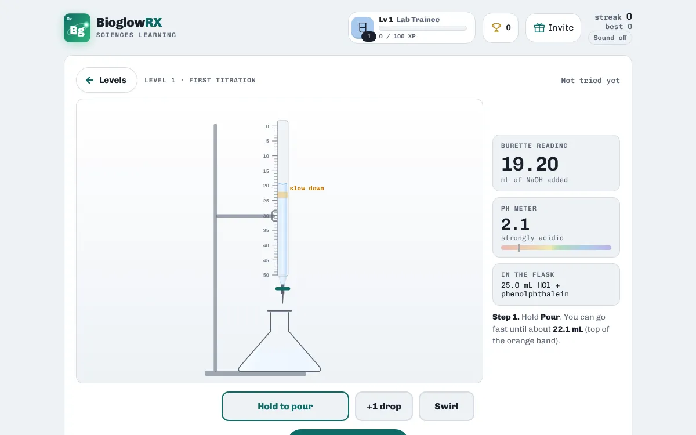

Chemistry · free · no login
Virtual titration lab

A titration finds the concentration of an acid by adding a base of known concentration until the indicator just changes colour. With phenolphthalein, that endpoint is the first pale pink that lasts after swirling.

In this simulation you hold to pour sodium hydroxide from the burette into 25.0 mL of hydrochloric acid, slow down near the endpoint, add single drops and swirl. Level 1 guides you with a pH meter and a "slow down" band; levels 2 and 3 take the help away and add the concentration calculation.
A taste of what's inside
| Level | What you do |
|---|---|
| 1 · First titration | Guided: pH meter, slow-down band and step tracker |
| 2 · On your own | No meter: read the burette and stop at the pink endpoint |
| 3 · Work it out | Find the endpoint, then calculate the acid's concentration |
Levels
- 1 · First titration · Guided: pH meter, slow-down band and step tracker
- 2 · On your own · No meter: read the burette and stop at the pink endpoint
- 3 · Work it out · Find the endpoint, then calculate the acid's concentration
How to study with it
- Start with Level 1 and follow the steps on screen.
- Try Level 2 without the pH meter. Using a hint caps the run at 2 stars.
- Finish with Level 3 and the concentration calculation.
Questions
What indicator does it use?
Phenolphthalein: colourless in acid, pink once the solution turns slightly basic.
Is it free?
Yes. Everything is free, with no ads and nothing to buy.
Do I need an account?
No. There is no login. Your scores, streaks and certificates are saved on your device.
Does it work on a phone?
Yes. It works in any modern browser on phones, tablets, Chromebooks and computers.
More free practice
 ChemistryBalancing chemical equations practiceSet the coefficients, name the reaction typePlay free
ChemistryBalancing chemical equations practiceSet the coefficients, name the reaction typePlay free  ChemistryPeriodic table gameNames, symbols, families and where each element sitsPlay free
ChemistryPeriodic table gameNames, symbols, families and where each element sitsPlay free  PharmacologyFree dosage calculation practiceTablets, liquids, mg/kg and IV rates with worked answersPlay free
PharmacologyFree dosage calculation practiceTablets, liquids, mg/kg and IV rates with worked answersPlay free BioglowRX Sciences Learning turns university science textbooks into free games, chapter by chapter: chemistry, anatomy & physiology, pharmacology, nutrition, and health & wellness. See all subjects.